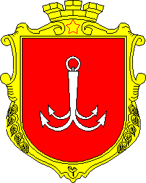

Oдна из центральных улиц города Одесса, является одной из главных достопримечательностей города. Проезжая часть выложена брусчаткой. На Дерибасовской находятся многочисленные кафе и магазины. Популярен также и примыкающий к улице Городской сад, первый в Одессе.
Архитектурное сооружение в стиле классицизма является памятником архитектуры первой половины XIX века и одной из главных достопримечательностей города. С верхних ступеней лестницы открывается широкая панорама морского порта, гавани и Одесского залива.
Первый театр в Одессе по времени постройки, значению и известности. Интерьер зрительного зала стилизован под архитектуру позднего французского рококо. Уникальная акустика подковообразного зала позволяет доносить даже шёпот со сцены в любой уголок зала.
Дворец визуально соткан из сочетаний прямых и дугообразных составляющих, архитектор использовал контраст между большими глухими гладкими поверхностями и колоннадами. В роскошных интерьерах, оформленных знаменитым скульптором и живописцем Карлом Скотти.
Одна из главных площадей Одессы, в историческом центре города. Имеет форму неправильного пятиугольника. Образована пересечением Преображенской, Садовой, Коблевской, Льва Толстого улиц.
Курортный район в Одессе, включающий одноимённый пляж. Курорт находится в Приморском районе города, на берегу Чёрного моря недалеко от 5—7-й станций Большого Фонтана. Современная Аркадия известна тем, что на её территории находится большое количество общественных заведений, таких как рестораны, дискотеки и ночные клубы.
Крупный торговый порт международного значения, расположен на северо-западном побережье Чёрного моря, в юго-западной части Одесского залива. Самый крупный порт Украины по грузообороту; третий по грузообороту на Чёрном море. Признан базовым круизным портом Украины, имеет один из крупнейших в Европе пассажирских терминалов.
Крупный продовольственный рынок в пределах исторического центра города Одессы. Является одной из городских достопримечательностей. На нём торговали в основном привозным товаром, то есть с колёс (с возов, фур и прочего), отсюда и название рынка — «Привоз».
Гостиница «Большая Московская» построена в период расцвета отельного бизнеса в Одессе. Здание было спроектировано архитектором Львом Влодеком, который также построил в Одессе «Дом с атлантами» и гостиницу «Пассаж». Изысканую лепнину создавали скульпторы Товий Фишель и С. Мильман.